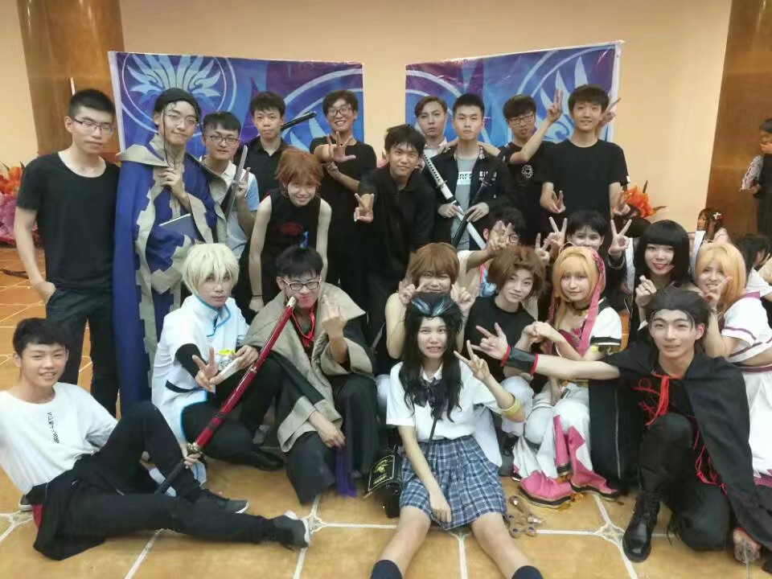
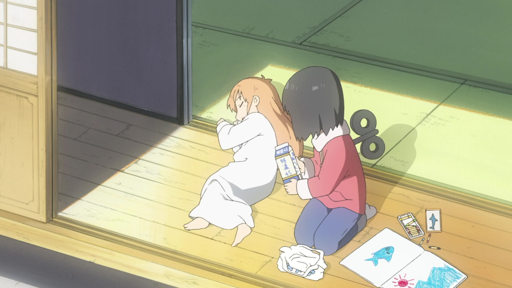
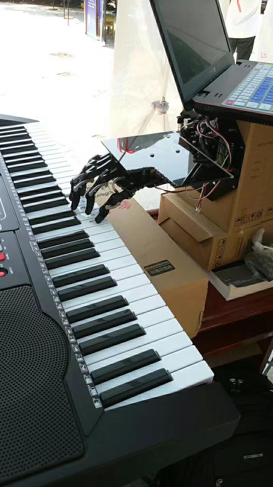
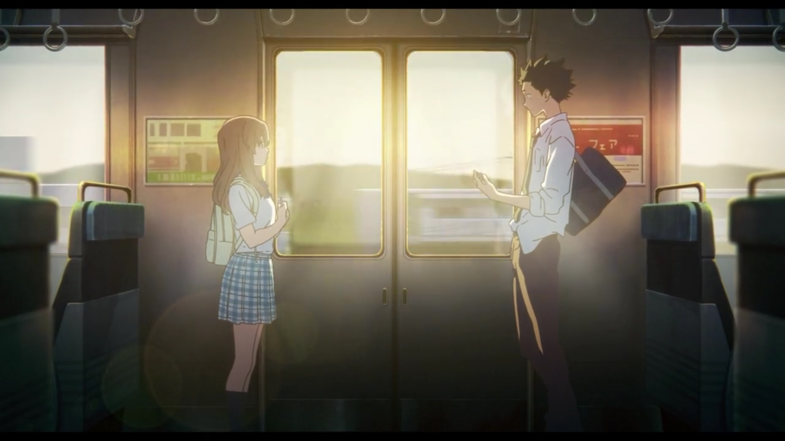
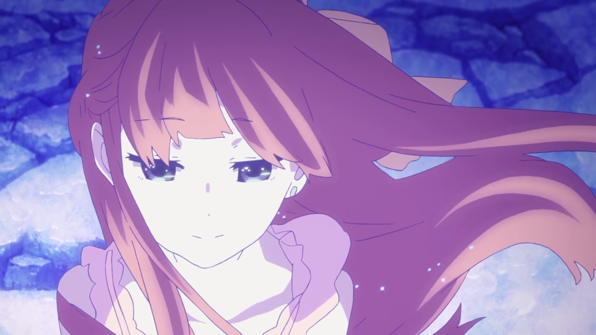
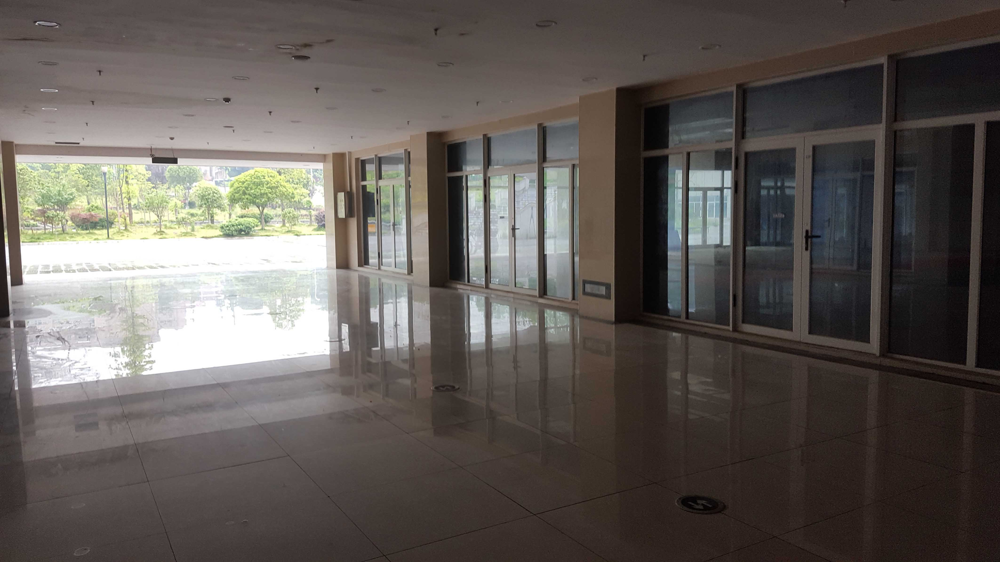
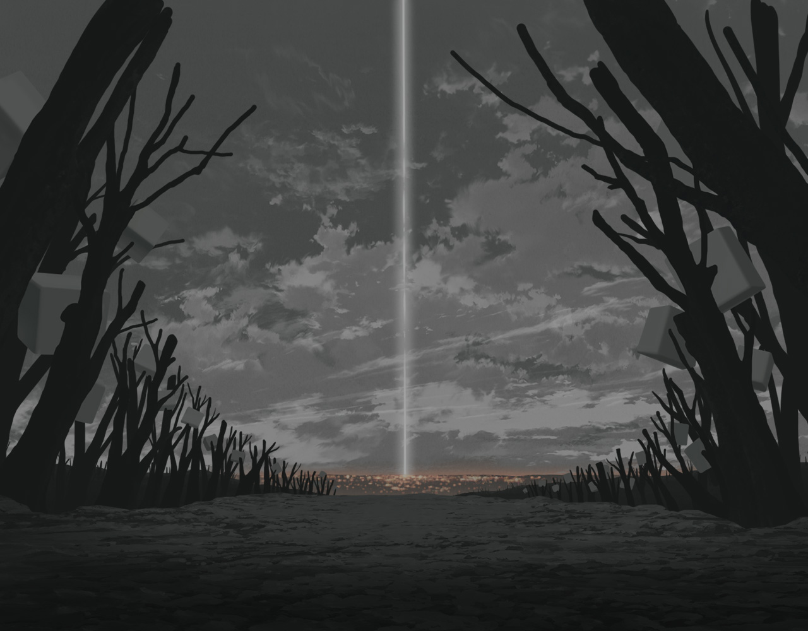

杂记
好久没有记博客了。所以就记一下最近的一些杂事吧。
OUTLINE：
+舞台剧
+Alice Project
+Nano Project
+Piand(Piano-Hand)
+声の形
+SHELTER
+Gavuriru
比如，昨天（05-30），我们舞台剧演出，ChinaJoy初赛，湖南赛区。早上是急匆匆地准备，化妆，打车赶到现场，然后仍是紧张期待的筹备。直到我们被通知可以上台了。似乎只是一眨眼。而台上的演出就更快了。我们按着此前无数次排练的那样在音乐的指引下做着动作。尽管可能因为我们比平常更加拼命，因而发生了各种道具的断裂，但是我们却没有出任何人员的失误。
演出结束后，我们大家便high了起来。先是一波约拍集邮，然后便是各种分食，狼人杀。玩罢几盘狼人杀，我便和尘埃、陵游一块去看比赛演出。感觉他们的剧也都挺棒。湖南大学的Angel Beats!高度还原了原剧情。回忆起了当当年的感动，眼眶有点进沙子。接着的仙剑类（不知道具体是啥2333)也颇为精彩。尽管看不懂剧情，但是演出了那份沧桑和浑厚。
补充一句，场地竟然是在电影院一个厅里面，跟之前说的大场地完全不一样。就很气。妈耶。
随后大家便一块溜了溜了。徒步去聚餐。拾陌秀了一波操作，当场把幕布架交易给了下面小卖部的一位善良的叔叔。徒步了好长时间，和大家各种闲聊闲扯wwww 在扶梯上一群人站成一排拍照。路人就一副玛德zz的感觉23333。
最后还是去川记蜀府(?)吃的饭。记得去年帮宣创部看漫展场地，之后就被他们邀来这里聚餐www 那也是一份怀念的回忆呢。
坐成两桌，点餐吃饭。一边吃饭，一边又玩起了狼人杀www 我们新人就各种傻www 后面又跟着隔壁桌玩起了猜数字大冒险的游戏。
直到颇晚才打车返程，差点回不来了。
最近终于开始搞Alice Project和Nano Project了。大概是受到 「にちじょう」 的刺激吧wwww
Alice Project目前实现了核心Transmitor，Extensions & Processors，语音交互，尽管不得不说微软的语音识别真的超级渣。并实作了Power Manager和Clock两个插件。
Nano Project，今天才收到了之前预定的底盘移动机器人，刚刚才研究拼好。不过好小，感觉并不能用来上路。。。而且不知道是不是电压不足，转速有点慢。只能试作了嚒？有点可惜。
这两天也搞了下华为杯的比赛。我们合作的是Piand(Piano-Hand)，钢琴手。5月28日是校赛智能设计大赛。我和胡在前一天晚上熬了个通宵，终于成功搞出了作品。（话说在这之前我几乎都没有做吧。。。还好有胡前期做了大量硬件的工作。）然后早上参展，群投，下午答辩。没想到依靠姚拉票和我们作品的吸引力我们力挺进入前十，拿到答辩资格。下午答辩，依靠胡的PPT和口才，以及我们现场绝妙的演示，成功获得评委的关注和好评。意外地斩获了二等奖。（一等奖一名，二等奖两名，三等奖七名。）
后面我熬了下夜改进了下软件界面，胡制作了材料，姚和胡搞了下机械臂的外观，用激光切割什么的，然后交了材料。等待初赛结果。
接下来要提的便是 「声の形」 ，这部京阿尼制作的动画电影我在旅日的时候便时常看到宣传海报。前几天有资源流出，便看了一半。然后便看到消息，在中国上映确定。兴奋不已。还以为不会上映了。然后又发现最近几天刚刚发行了BD。踌躇了会儿，忍不住剁手了初回限定版。连同同时期遇见的 「SHELTER」 ，剁手了BD MV。在萌购上代购了。不过果然代购总得等上一个月半个月呢。
 最后感叹一下。下午在前往本部做实验的时候，路过青年街，那熟悉的景色一下闯进我脑海。此前不曾多想，那正是我们第一次排练的地方。
「すべての始まり。」 何度か、懐かしい。
未多想，许多乱糟糟的思绪便涌上心头。
一切皆有始有终。当时第一次来到这里，带着懵糟未知。而今，能够熟练地演出一通剧，哪怕我这样的脸盲和名字记忆能力，也能够轻松认出所有人，记住他们的cn，这其中，我们一起挥洒了无尽的汗水，一遍遍地对台词，对打戏。拾陌也一遍遍扮演凶角，追着我们把舞台剧演绎得更加完美。我们从陌生到熟悉，而将我们联系起来的，正是一次次的辛苦的排练。不得不说，我其实是享受别人思维成果的那一个。拾陌，千尘构思了剧本，代君绞尽脑汁编出了打戏，并逐个动作指导我们，大大一遍遍耐心地教给我们舞蹈。其他人也都在背后默默地付出。每个人成为了不可或缺的一部分。正是因为如此，我才真正意识到，比赛结束了，每天晚上的排练也已经结束了。我这才真正意识到这意味了什么。多少有些后悔，甚至希望我们其实进了复赛，这样我们也许就还会有排练。宛如《最后一课》那般。
但愿曲终人不散。毕竟，都还在一个学校，都还在一个社团。
伤感的情绪蔓延和扩大。不知道如何能够排遣。此时便常奢望有一个知音者，能够与之无话不谈。不需要处处趣味相投，只要聊得来，有共同的兴趣和追求。但是这样的人又怎能够觅得? 知音者，可遇而不可求也。
自从旅日归来，便嗜上了旅游的瘾。旅行，实在是一件美妙浪漫的事。到异国旅行更是如此。怪不得环游世界有如此大的魅力。但求一趣味相投之人，便可周游世界，且乐在其中。尽管一个人周游世界探索人文亦不失其乐，但若无知心者交流，乐趣便失去了发酵的可能。
前段时间看了Gavuriru，甚是喜欢。也许我的大学正像珈百璃那样，从高中到大学，生活的方式，思维有了极大的转变。我无法确定这种转变是好是坏。但我仍然努力保持心灵有一处净土。但求此净土留存，便可心安。
周围人似乎都有种偏见，认为程序猿专注于代码，是死宅，直男，乃至没有什么情感。我自己偶尔都会有这种错觉。但我知道，理性为先和感性并不矛盾。我所祈愿的，乃是成为一个敢想敢做的人，心中怀有梦想，即便不能够实现，也要向前伸手去够。这便是我的执着了。无论是对二次元的追求，还是智能AI，或是寻觅知音者，环游世界，乃至星际航行。这些都是我所追求的美。永远不愿妥协的梦。亦是支撑我苟延至今的动力。
我是感激二次元的，她给了我梦想，在我失意时陪伴我颓废，安抚我的内心，又鼓励我站起来，怀着哪怕十分幼稚的梦前进。对一个从小学就已经觉得人生不过如此的人来说，天真的梦，遥不可及的美，才能够花完毕生去追求。
「想い出が、悲しいことだったとしても・・・」
「信じて、進んでいくんだ。」
「寂しさを知ってしまって、くじけそうになっても、あなたのおかげで、思い出して、強くなれるんだ。」

也许我已经困糊涂了，但还是把这篇乱七八糟的杂文先公开吧。